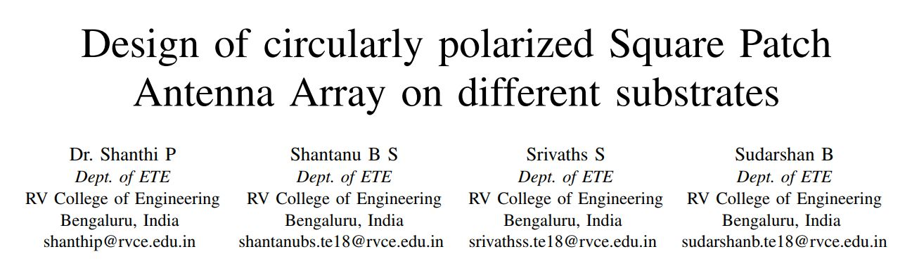

Sept. 14, 2020
Here, I have contributed to an AICTE sponsored project on the Development of a textbook on
Indian Knowledge Systems for the Engineering students under Dr. B Mahadevan
of IIM Bangalore. Specially played a role in collecting and organizing relevant
material for one of the chapters titled “Astronomy”. As a fruit of my efforts, I received a letter of Appreciation from Dr. B Mahadevan himself.
Was a part of the Wipro IISc Research and Innovation (WIRIN) Project, in collaboration with RVCE, for
Autonomous Vehicles, specifically contributing to the Data Collection Team,
which dealt with detection of vehicular components in images. This played a major role since these images served as inputs to the Machine Learning Algorithms that were developed.
Firstly, a literature review is presented about the impact of adverse weather conditions on state-of-the-art sensor – RADAR. Then, the effect of weather on
RADAR is characterized, which considers both the rain attenuation and the back-scatter effects. Also, the performance of the RADIATE Dataset
is surveyed, which aims to facilitate research on
object detection, tracking and scene understanding using radar sensing for safe autonomous
driving. In order to analyze the RADIATE Dataset, a python program is sumlated using the SDK provided, which
have been slightly modified, to enable vehicle detection using RADAR. The training file used
in developing the Dataset provides a JSON file as output and has trained model weights as input
vectors for training
Currently, I am writing a book on Indian Knowledge Systems, specifically a handbook on mathematics, which covers information regarding various Ancient Indian Mathematicians like Aryabhata, Bhaskara, Brahmagupta etc., their works & speciality, thus re-kindling interest among passionate students and teachers.
A Mathematics paper titled “Mathematics in Tiloyapannatti” has been
accepted at an International Conference conducted on November 3 - November 5,
2019 at Tijara, Rajasthan.
A Mathematics paper titled "Kuṭṭīkāra equations in Mahāvīrācāryā’s
Gaṇitasārasaṅgraha" has been accepted at an International Conference
conducted on Dec. 11 - Dec. 13, 2020 which was conducted virtually in view of the
Pandemic situation. The paper is to be published as a part of a monograph and will
be published by the World Scientific Publishing Company.

A paper titled "Design of circularly polarized Square Patch Antenna Array on
different substrates" has been published in 2021 2nd Global Conference for
Advancement in Technology (GCAT) which was held on Oct. 1 - Oct.3, 2021.
A paper titled "Materials used for RFID technology and their applications" has
been accepted in the International Conference on Technologies for Smart Green
Connected Societies (ICTSGS -1) conducted virtually on Nov. 29 - Nov. 30 2021.
It is to be published by Feb. 2022.
A paper titled "Metal oxide based electrochromic materials: Recent advances
in Synthesis, characterisation and applications" has been accepted in the
International Conference on Technologies for Smart Green Connected Societies
(ICTSGS -1) conducted virtually on Nov. 29 - Nov. 30 2021. It is to be published by
Feb. 2022.